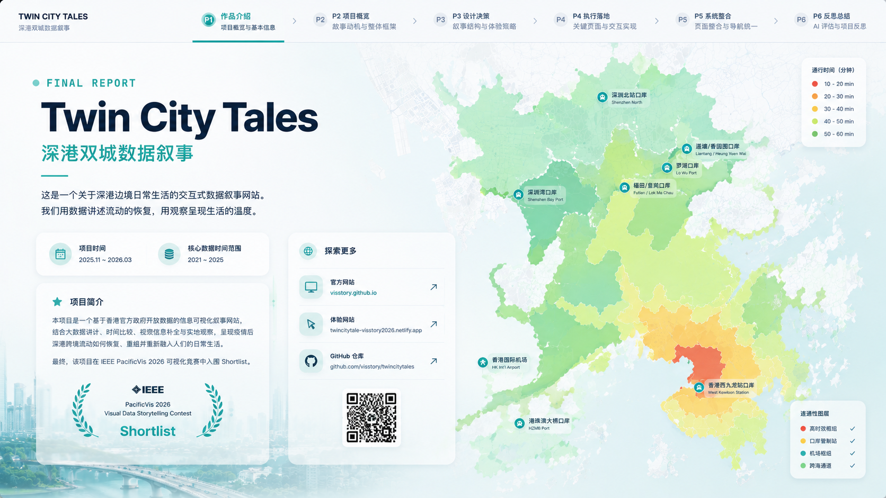
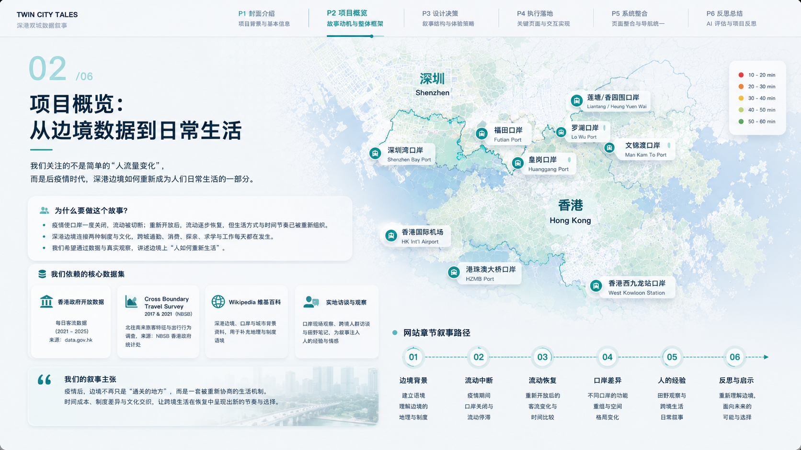
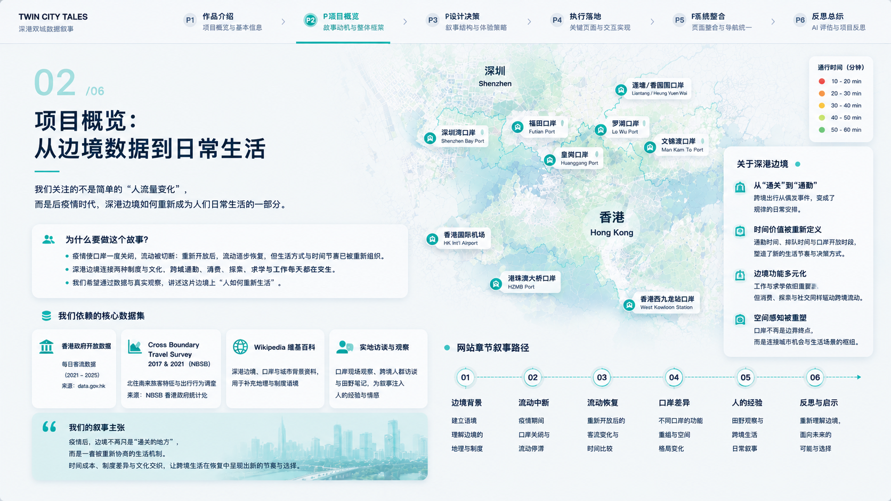
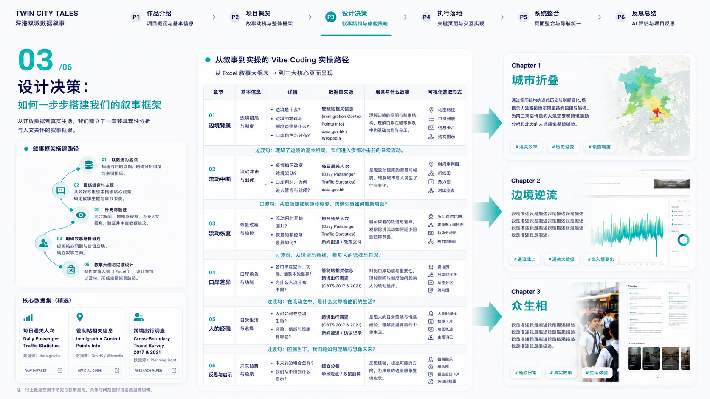
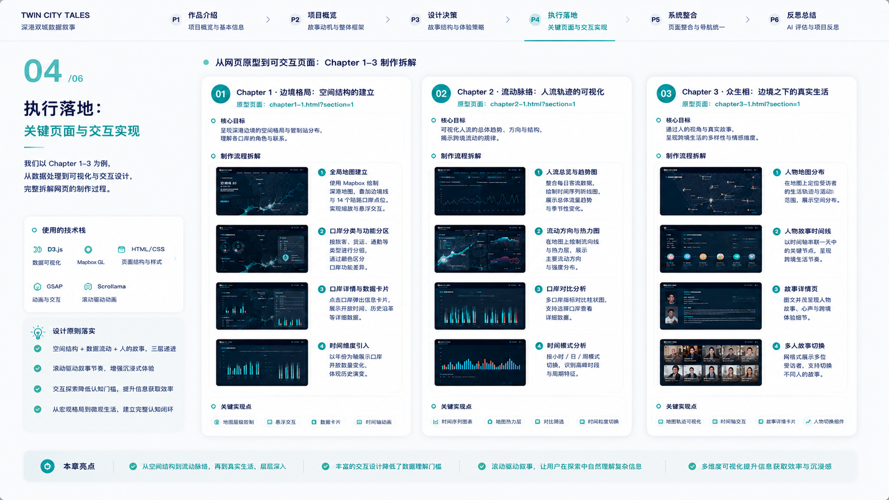
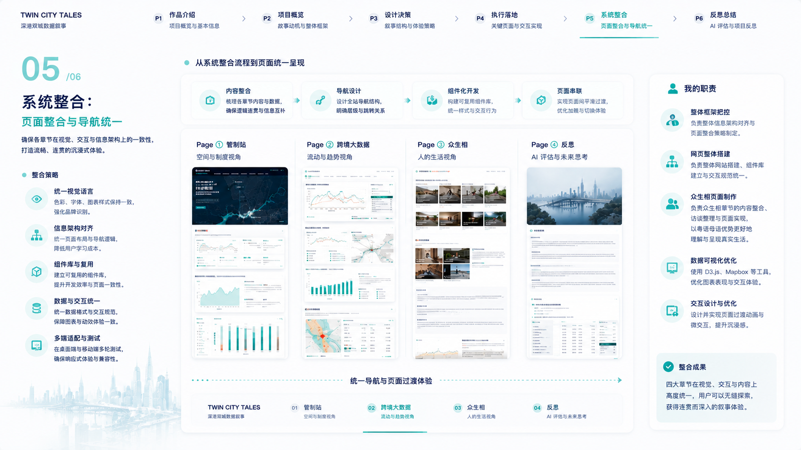
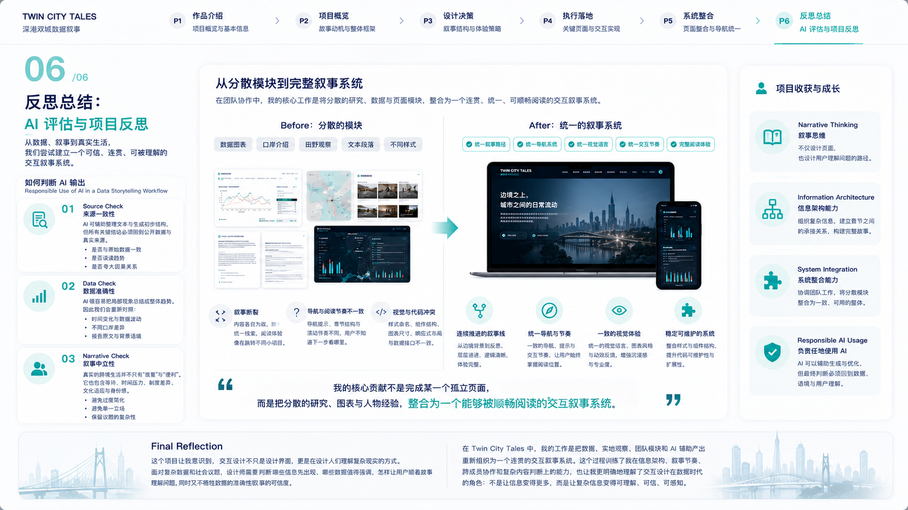

Twin City Tale
Shenzhen-Hong Kong Border Chronicle · 数据叙事可视化案例
Context
这个项目聚焦 2023-2025 年深港通勤体验。目标不是“做一张漂亮图”，而是把跨境生活中的人群迁徙、时间节奏与空间分层，转成可以被普通观众理解的叙事结构。
核心问题：如何把“跨境数据”从抽象统计，转成“有情境、有情绪、有决策价值”的可视化故事。

项目概览：深港双城数据叙事网站 - IEEE PacificVis 2026 Shortlist
How It Works
基于 2021-2025 年香港政府日客流量数据，结合建筑学城市界面叙事方法与实地田野调查。我将复杂的跨境流动数据拆解为“时间、空间、行为”三个维度，构建了一个四章节的线性叙事结构。

技术上采用 D3.js 进行前端代码实现，确保大规模数据的实时渲染与流畅的滚动叙事体验。组员负责视觉艺术表达，我负责整个技术栈选型、叙事逻辑搭建与前端代码编写。

Core Iterations
在设计过程中，我们经历了从“单纯的数据展示”到“情感化叙事”的转变。早期的版本过于关注图形的复杂度，导致普通用户难以理解数据背后的社会意义。最终版通过引入“典型通勤者”的视角，将枯燥的客流量数据转化为具体的跨境生活故事。

Result
ShortlistIEEE PacificVis 2026 Sydney
3层叙事时间 / 空间 / 行为联动
D3.js高性能数据驱动渲染
Reflection
这个项目让我进一步确认：数据可视化投递场景里，叙事节奏比图形复杂度更关键。面试官更在意你如何定义问题、如何做取舍、如何验证信息传达，而不是只看视觉奇观。
Visual Archive


